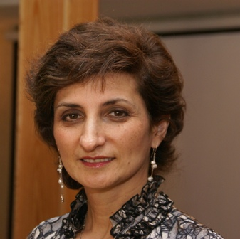
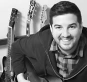
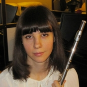
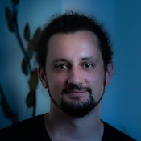

INGA Y. MAGID
Keys for Kids Founder and Educational Director
Piano, Keys for Kids classes
Keys for Kids® creator and founder, Inga Y Magid, is a music theorist, educator, lecturer, and pianist. A native of Ukraine, she holds a Master's degree in music education from Ukraine as well as a Master's in Piano Pedagogy from Webster University, St. Louis, MO.
Inga Magid has been a faculty member at the University of Massachusetts (12 years), Lowell, MA, Webster University, St. Louis, MO, and the University of St. Louis, MO. She developed her first courses in 1994 as a result of a lifelong interest in music for children, with a goal toproduce a comprehensive, motivating beginner's music program to train the ears and brain as much as the fingers.
Inga Y. Magid About Her Method
When my family moved to St. Louis, MO from Riga, Latvia in 1989, I planned to continue my music teaching career in America. Then my experience consisted of 23 years of piano study and 10 years of piano teaching in a classical Russian tradition: one-on-one instruction with an emphasis on a very serious attitude toward studying and practicing music starting at very young age. Weekly classes included solfege/ear training, theory, music literature, and music ensemble in addition to two piano lessons per week.
Everything felt different in America, from a new lifestyle to new music terminology and a new attitude toward music education for children. The idea of combining FUN with EDUCATION was new and exciting, and so compelling compared to the unpleasant memories of my own early music lessons. A variety of colorful music method books lined the shelves in the music stores, each claimed to be the best and the most comprehensive. It was disappointing to find that most books were geared toward older beginners who could already read and write.
A large body of research confirms the tremendous benefits of introducing young children to many kinds of music. How exciting would it be to use children's innate curiosity and their capacity for easy ear training at a young age to produce real results: a genuine understanding, love, and appreciation of music, and the ability to make music! The goal was set to train the brain and ears as well as fingers: young children really can READ music, play the piano, and understand music while having a lot of FUN. I started my classes with the idea of making lessons look more like children's games than "lessons."
Electronic touch-sensitive keyboards provided the opportunity for a small group setting. Children are accustomed to learning in small groups in preschool and school, and a group setting allows children to learn from each other as well as the teacher. Children challenge and encourage each other to keep up with the rest of the group.
We invited parents to be a part of the group too - to enjoy the class with their children, and to be partners in music at home. In class, parents would provide a sense of stability and security for the child, help their children participate, and handle tasks that require reading, such as finding pages or pointing in the book for reading and playing. At home, parents could reinforce concepts introduced in class and help keep the high level of motivation between classes.
A choice of a movable "Do" (as in "Do Re Mi") solfege singing in unique combination with the traditional letter-name notation and the Kodaly sign system provided the basis for the ear training and note reading. Children easily understood the Kodaly "sign language," and enjoyed "catching" me on gradually increasingly difficult patterns. Very soon, they could copy and recall a variety of the 3- to 5- note patterns. This system naturally quickly moved us from singing and copying music patterns to reading these patterns on the music staff. Students developed a great sense of pitch and rhythm while learning to read music in solfege (as in “Do Re Mi”) and in traditional music notation (as in “C D E”). The technique engaged the children's attention and stimulated their minds and creativity, while the solfege-based ear training, along with the traditional note reading and rhythmic "games" made music so much more understandable and so much less intimidating.
Since those first courses, specific lesson plans and lesson content have certainly evolved through the wonderful experience of working with thousands of children and parents. But the heart of the program and the basic methodology remain centered on the same core belief: children are remarkably capable - at a much younger age than most people think. With the right approach, children can take advantage of that potential and have a lot of fun in the process.
ABOUYOUSSEF, KAWTAR
Voice, Sing’N Kids
Kawtar Abouyoussef is a Boston-based vocalist and voice teacher who draws upon elements of R&B, Arabic vocal practices, and contemporary popular genres to create a unique and engaging learning experience.
Born and raised in Quincy, Massachusetts, Kawtar began experimenting with music at a young age. She joined the Boston Children's Chorus, where she had the pleasure of performing with renowned actor Hugh Jackman at Boston’s TD Garden. Realizing that she could expand her talent, Kawtar began working under noted singer-songwriter Andrea Charls, who encouraged Kawtar to explore music outside of the choral world.
While working towards her Bachelor's degree in Vocal Performance at UMASS Lowell, Kawtar taught music to a fantastic studio of kids aged 7-18 at the Boys and Girls Club of Greater Lowell. Students can look forward to a flexible mix of their preferences and focus on proper vocal techniques and exercises for healthy and strong vocal development with a caring attentive instructor.
Sarah Fisher has been performing since age 4. She is a Keys-for-Kids alumni of 20 years and has been successfully teaching s for the last 5 years, as well as leading multiple seasons of the Keys for Kids summer music camps. Sarah has written and arranged plays and music for several summer camps.
Sarah is an author, composer, and arranger, and is in the process of publishing her first book of works. Sarah is active inner church’s music ministry. She frequently performs, sings with the Masterworks Chorale in Lexington, where she is also on the board of directors. Sarah is a caring and attentive to her students, encouraging and motivating on every step on the way, taking pride in creating individual education plan to accomplish best results for each child.
Jacob Kline began studying the piano at the age of three. When he was 8, he began taking lessons with Roberto Poli at New England Conservatory Preparatory School. While enrolled at NEC Prep, Jacob performed numerous solo recitals, chamber music concerts, and broadened his musical repertoire with classes in music theory, chorus, jazz drums, and masterclasses. His summer studies included world renowned teachers such as Victor Rosenbaum, Martin Canin, and Max Levinson at Killington Music Festival and Bowdoin International Music Festival. Jacob has participated in masterclasses led by Boris Slutzky, Joseph Silverstein and The Boston Trio.
He received numerous accolades: completing the entire certificate program at NEC Prep, winning third prize in the Steinway Society of Massachusetts competition and being named a YoungArts Fellow. After high school, Mr. Kline studied piano performance, under the tutelage of Sergey Schepkin, and computer science at Carnegie Mellon University. In addition to his piano performance work, he was a piano accompanist for the CMU Drama Department. Jacob has been teaching for 3 years working with younger children. He has a caring, patient approach to teaching, supporting the goals of his students, whether they’re interested in understanding music at a high level or playing music purely for enjoyment.
Jacob has a diverse range of other interests, including gaming, baking bread, gardening, and skiing. He spent two years as a certified ski instructor at Breckenridge Ski Resort working with a broad range of clients including families and children with special needs.

KRACUNAS, PATRICK
Guitar, Ukulele
Patrick is a multi-instrumentalist, composer & educator.
Born in Mobile, Alabama Patrick began his musical training at age 7. After relocating to Massachusetts he continued his studies with Berklee professors and at the NEC prep program. This led him to The University of North Texas on scholarship, where he received a bachelor of music.
Patrick is a passion and attentive instructor, drawing from his students’ interests to expand and develop their musical creativity and abilities in different styles.
Currently, Patrick can be seen performing in various groups or solo in a range of genres around Boston, MA.

PEREBEYEVA, KARINA
Flute, Piano
Karina Perebeyeva received her BA from Almaty College of Music (USSR) and her Masters of Music degree with a major in Flute and minor in Piano from Almaty State Conservatory of Music (USSR). Karina continued to study flute with Leonard Mironovich of the Longy School of Music and has performed on Armenian radio and television. Today, Karina continues to perform professionally with various chamber groups . Karina has more than 15 years of teaching experience across all ages and abilities.
Karina’s goal is to instill a sense of music appreciation and encourage students to expand their interests. She takes a serious, academic approach at a highly professional level in preparing those looking towards competitive performances, but equally enjoys teaching students who simply wish to better understand music. Karina focuses on offering praise and positive encouragement to keep students motivated and eager to learn and progress in their development.
Karina thinks that every child is unique and she creates a special approach to musical education for every young student.
PRICHARD, LAURA
Voice, Piano, Acoustic Guitar, Woodwind, Percussion, Special Needs
Laura Prichard majored in music at Yale University and holds graduate degrees in performance, conducting, and music history/theory from the University of Illinois. She studied voice in the graduate studio of William Warfield (from Showboat) at the University of Illinois, with Jan DeGeatani (Eastman School of Music) and Lili Chookasian (Metropolitan Opera) at Yale. She sings regularly with the Boston Symphony, Boston Ballet Orchestra, and Boston Pops.
Laura was a founding student member of the semi-pro Drum Corps Star of Indiana, based in Bloomington, IN (on keyboard bells, quadruple mallets), and has played "Reeds" (flute/clarinets/saxophones) professionally for Boston- and San Francisco-area professional musical theater orchestras. She teaches woodwind, voice, piano and acoustic guitar lessons at the Dana Hall School of Music in Wellesley.
Laura’s grandmother was a piano teacher, and she loves working with performers of all ages and interests. She studied jazz piano with Moke Owens (Chicago Jazz player in the 1960s) and her students have won IAJE National and Regional jazz awards and scholarships. Laura has been a member of the Music and History faculties at UMass-Lowell since 2004. She lectures frequently in the Boston area on musical topics and is a regular guest lecturer for the Chicago Symphony (since 2009) and San Francisco Symphony (since 1997).
SPICER, JUSTIN
Guitar, Ukulele, Bass
Justin started playing guitar when he was ten years old, after developing an interest in country music as well as the music of Jimi Hendrix. Once Justin was in high school, he became heavily involved in the school's band program: participating in the marching band, the jazz band, the concert band, and the drum-line; earning the Patrick S. Gilmore award in his sophomore year.
Classes for guitar, piano, and music theory had provided Justin with a foundation and experience to devise an independent study course based on composition techniques ranging from Baroque to modern styles. Justin participation in multiple bands outside of school ranking top placement regularly in annual Battle of The Bands competitions, with two first-place nominations. In 2011 Justin began his final stage of higher education at Berklee College of Music; majoring in Guitar Performance. Justin’s approachable and caring teaching style secured love and respect from his students.

STOICESCU, VLAD
Piano, Keys for Kids Classes, Violin, Twinkle Groups, Composition
Vlad Stoicescu received his undergraduate degree from the National University of Music in Bucharest, Romania, where he studied Violin Performance and Jazz Composition and his Master’s degree from HFK Bremen where he studied Jazz. He played Violin in numerous Orchestras and Ensembles in Europe, and he has studied Violin and Jazz with esteemed instructors like Mircea Tiberian, Nigel Kennedy, Eugene Sirbu, Catalin Rasvan, Heiner Bullman and many others. After completing his degrees he applied all the encyclopedic musical knowledge he gained in so many musical areas in the realm of film music. He composed original soundtracks for five feature films and received a nominations for the soundtrack of the movie “Meekness” at the Cairo International Film Festival.
As a teacher, Vlad believes in the transformative power of music, viewing all forms of musical expression equally valid. Learning music should be a fun, engaging and syncretic activity that is not to be learned by it’s own but in correlation with all other subjects of our culture, meant to offer a different perspective, shine a light on different facets of his students’ development.